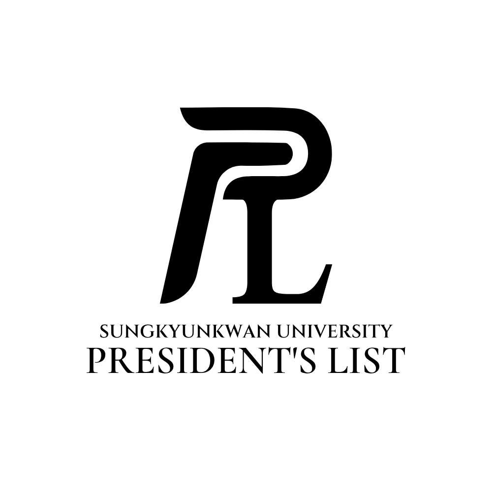

동아리·학회 활동
사진, 체육, 학술 활동을 폭넓게 경험하며 전공 외 관심사와 학문적 탐구를 함께 이어갔습니다.

성균관대 오서진의 성장 스토리SKKU Student Growth Portfolio
식품생명공학과 화학공학을 함께 공부하며, 학생회·봉사·학부연구생·공모전·대외활동을 통해 대학생활 전반의 성장 흐름을 만들어왔습니다.
Campus Activities
1학년에는 학생봉사대 다소미 활동을 통해 기획과 협업을 경험했고, 2학년에는 식품생명공학과 학생회 활동을 시작해 이후 학생회장으로 학과 공동체 운영에 참여했습니다. 화학공학 복수전공을 시작한 뒤에는 SAF 공정모사, 촉매 합성, 디지털 트윈 반응기, KIST 전기화학적 CO₂ 포집·전환 연구까지 관심 분야를 확장했습니다.
아동학대 방지 캠페인, 교내 플리마켓, 대학생 재능봉사 캠프에 참여하며 봉사 활동을 단순 참여가 아닌 기획과 실행의 관점에서 경험했습니다.
제47대 학생회 홍보부원으로 시작해 제50대 학생회장으로 활동하며 학과 행사 운영, 홍보물 제작, 구성원 소통을 경험했습니다.
사진, 체육, 학술 활동을 폭넓게 경험하며 전공 외 관심사와 학문적 탐구를 함께 이어갔습니다.
화학공학 복수전공 이후 촉매, 공정모델링, 디지털 트윈, 전기화학적 CO₂ 전환 연구로 관심 분야를 구체화했습니다.
Education
생명공학을 향한 관심의 시작
폭넓은 기초과학 학습과 비교과 활동
생명공학, 식품공학, 실험 기반 교과를 통해 생명·공정 시스템에 대한 이해
열역학, 유체역학, 반응공학, 공정설계 등 화학공학 기반 지식 확장
Awards & Scholarships
Language & Certificates
Projects & Research
이산화탄소 포집과 전기화학적 전환 반응의 기본 원리 및 최신 기술 이해를 기반으로, 공정 변수 최적화, 안정적 연속 운전, 운전 데이터 분석 관점에서 연구 경험을 확장하고 있습니다.
공정 모델링 연구실에서 센서 데이터, 반응기 제작, 제어 로직을 연결해 미생물 음식물 처리기 디지털 트윈 시스템을 연구했습니다. 포스터 이미지는 추후 업로드 예정입니다.
에너지촉매 연구실에서 이산화탄소 전환을 통한 함산소화합물 합성용 메조포러스 구조 촉매를 다루며 촉매 구조와 반응 성능의 관계를 학습했습니다.
반응공학 과제로 DWSIM 기반 공정모사를 통해 Alcohol-to-Jet 계열 지속가능항공유 생산 공정의 물질수지, 에너지 흐름, 운전 조건 변화를 검토했습니다.
SimScale을 통한 열전달 해석과 데이터 기반 예측을 연결하여 TIM의 온도 응답과 열전도 특성을 해석하는 프로젝트를 수행했습니다. 포스터 이미지는 추후 업로드 예정입니다.
제약·바이오 산업 직무 이해를 위해 실무 기반 과제를 수행하며 전공 지식이 산업 현장에서 활용되는 방식을 학습했습니다.
Story
화학공학을 공부하며 반응 하나가 실제 제품과 공정으로 이어지는 과정에 흥미를 느꼈습니다. 이후 공정모사와 장치 제작 프로젝트를 통해 이론을 실제 시스템으로 연결하는 경험을 시작했습니다.
Digital Badge
Vision